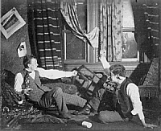
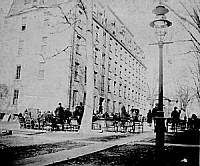
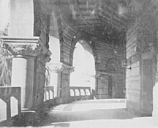
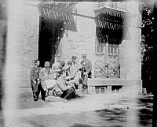
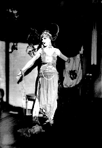
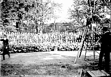
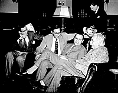
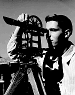
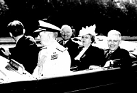

Students and Photography

In the last decade of the nineteenth century more and more students had their own cameras and were able to document activities in a more informal manner. These two students staged and photographed a series of scenes in a dorm room.

Student photographers document the commonplace activity of students waiting outside of West College to buy tickets for the 1892 Yale-Princeton game.

A member of the Princeton Photography Club in the 1890s, A. W. Jamison took a number of photographs of Princeton campus, many of which are housed in the Princeton University Archives. This photograph is one of a series of shots of Richardson Hall that Jamison took.

The last year of the nineteenth century saw a number of advances in photographic technology. Smaller cameras and roll film meant that a greater number of people could take their own photographs. M. P. Brush (Class of 1894) owned a camera and took many photographs of his friends during his years at Princeton. He snapped this shot of his friends, "Carving on my chair," on the steps of 5 North Reunion Hall.

Many Princeton students had their own cameras and took countless photographs during their four years at Princeton. Harold Wanless (Class of 1920) is counted among those students, though his photographs should not be viewed as mere snapshots. His outstanding collection of over 500 glass plate negatives housed in the Princeton University Archives documents all aspects of life at Princeton. This photograph shows a student in drag as a vamp for that year's Triangle Show.

Many Princeton students had their own cameras and took countless photographs during their four years at Princeton. Harold Wanless (Class of 1920) is counted among those students, though his photographs should not be viewed as mere snapshots. His outstanding collection of over 500 glass plate negatives housed in the Princeton University Archives documents all aspects of life at Princeton. This photograph of a photographer taking the class picture on Cannon Green is one of those images.

In the 1940s a group of Princeton students formed the Princeton Photo Service, a student-run organization that took photographs of all campus events to sell to a variety of publications-from the Prince to national newspapers. This photograph of Albert Einstein with members of the Student Hebrew Association was taken in 1947 by a staff photographer of the Princeton Photo Service.

J. Wayman Williams (1947), a.k.a. "Flash," was a member of many student photographic organizations: photo editor of the Bric-a-Brac and the Princeton Engineer, treasurer and then president of the Princeton Camera Club, and chair of the Princeton Picture Service. Williams also did freelance work for the Princeton Alumni Weekly; almost as many of his photographs appeared as did those of Alan W. Richards during his four years at Princeton.
This photograph by Williams of C. Edward Kepler (1951) looking through a transit, appeared on the cover of The Princeton Engineer in November 1947.

Princeton University's Bicentennial was a highly celebrated event. James Lebenthal (Class of 1949) snapped this photograph of President Harry S Truman, with Bess Truman and Princeton President Harold W. Dodds during the festivities.
 Return to the Mudd Library home page.
Return to the Mudd Library home page.
{kind=link}